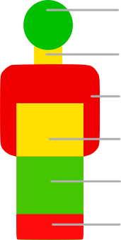

Assessment

Patient has been known to jam forks into electrical outlets. Keep small metal objects out of reach. Likes to talk about birdwatching. A LOT.
Patient has been known to jam forks into electrical outlets. Keep small metal objects out of reach. Likes to talk about birdwatching. A LOT.